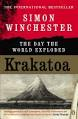

Krakatoa: The Day of the World Explodes
Main Idea: The origin of Krakatoa eruption
Important Idea: The eruption of Krakatoa had been starting it on 20 May 1883 after 200 years sleep.
Main point:
The eruption of Krakatoa in 1883, it was powerful eruption. More than 30,000 people die and the biggest around 40 m tsunami in Sunda strait cause the eruption. And the sound of the explosion of eruption is heard until Australia, Rodrigues Island in Africa, and India. dust falling on Europe. Turning the world into darkness for a year due to volcanic ash. Volcanic winter cause by the eruption. Java and Sumatra are the most impact of eruption. The explosion is 30,000 times as atomic boom as in Hiroshima and Nagasaki after World War II.
Fact: Around 30,000 people die due to eruption of Krakatoa and the tsunami, and the explosion is 30,000 times as atomic boom as in Hiroshima and Nagasaki
